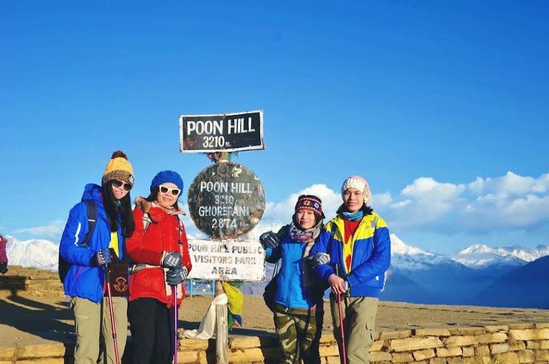
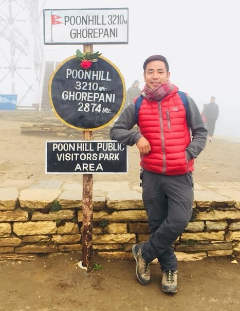
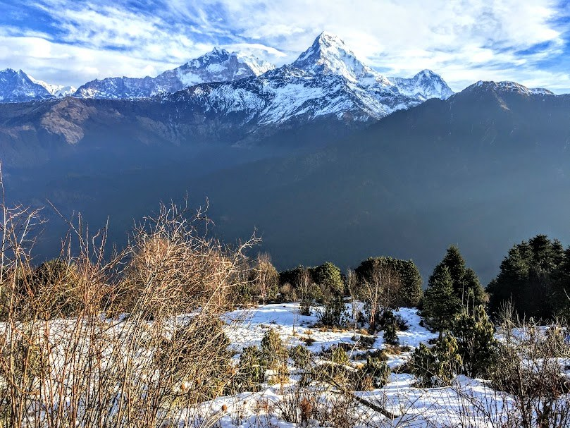
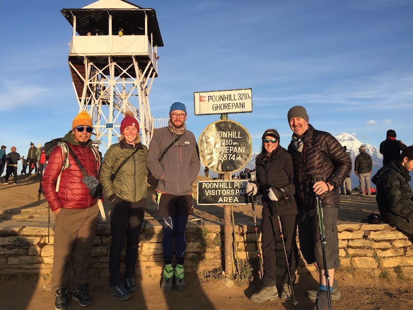
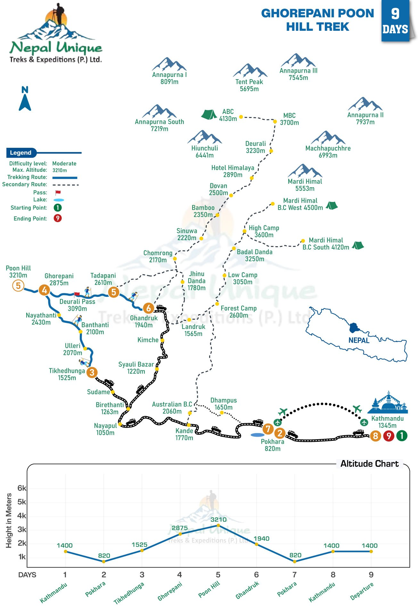

Luxury Ghorepani Ghandruk Trek
The world-famous trekking destinations, the Annapurna Circuit Trek and Annapurna Base Camp Trek, are located within the Annapurna Conservation Area (ACAP). These are adventurous trekking routes that pass through high-altitude terrain, including challenging mountain passes and snowy landscapes.





Key Trip Facts
Trek Overview
Trip Highlights
Luxury Ghorepani Ghandruk Trek Overview
The world-famous trekking destinations, the Annapurna Circuit Trek and Annapurna Base Camp Trek, are located within the Annapurna Conservation Area (ACAP). These are adventurous trekking routes that pass through high-altitude terrain, including challenging mountain passes and snowy landscapes.
However, for beginner trekkers and those looking for a more comfortable adventure, we have designed a short and scenic Luxury Ghorepani Ghandruk Trek itinerary. This luxury trek package offers magnificent views of the Annapurna Himalayas without the challenges of extreme high altitudes or snowy high passes, making it an ideal choice for travelers seeking a comfortable and memorable Himalayan trekking experience.
This Aannapurna Mini Trek designed for travelers who want the magic of the mountains paired with premium lodges, private transport, and personalized service, this Ghorepani Ghandruk Trek experience blends adventure with genuine relaxation.
This Trek package are started from Kathmandu International Airport, after your arrivel and ending in Kathmandu with Nepali Culturel farewell dinner, this luxury trek takes you through Pokhara Valley, pine and rhododendron forests, terraced farmland, and traditional stone villages before climbing to the iconic Ghorepani Poon Hill viewpoint, which is famous for one of the finest sunrise views in Nepal, where Mt Annapurna, Mt Dhaulagiri, and Mt Machhapuchhre light up in gold and pink. From there, the trail winds down through Ghandruk village, one of the most picturesque Gurung settlements in the Annapurna region, known for its stone-paved alleys, warm hospitality, and unmatched views of Annapurna South and Hiunchuli.
What sets this Luxury Ghandruk Trek apart is the way it's tailored for comfort. Instead of basic teahouses, you'll stay in handpicked boutique lodges and premium mountain properties that offer cozy rooms, hot showers, quality dining, and inviting common spaces to unwind after each day's walk. Private guides and porters, flexible pacing, and thoughtfully planned rest points mean the journey feels indulgent rather than exhausting ideal for couples, families, and travelers who want an authentic Himalayan experience minus the rough edges.
As a luxury short trek in Nepal, this route is perfect for those with limited time who still want a genuine high-altitude experience. It typically takes around 5 to 7 days, making it one of the most accessible luxury Annapurna treks for first-timers, honeymooners, or anyone looking for a premium alternative to longer, more demanding routes like Annapurna Base Camp.
Every Luxury Ghorepani Ghandruk Trek package can be customized from the exact itinerary and lodge selection to private departures and add-on experiences like spa treatments, photography support, or extended stays in Pokhara. Whether you're searching for the best luxury trek in Nepal, planning ahead for a Luxury Ghorepani Ghandruk Trek 2026 or 2027 departure, or simply comparing luxury trekking packages in Nepal, this journey delivers the perfect balance of adventure, culture, and comfort.
If you're ready to experience the Annapurna foothills in style, our team can help you with a detailed Luxury Ghorepani Ghandruk Trek itinerary, transparent Ghorepani Ghandruk Trek cost breakdown, and easy booking options so you can focus on the views, and we'll handle the rest.
Why Nepal Unique Treks for Luxury Ghorepani Ghandruk Trek
Choosing the right trekking company is essential for enjoying a comfortable, safe, and memorable Himalayan adventure. Nepal Unique Treks combines local expertise, personalized service, quality accommodation, and carefully designed itineraries to make your Luxury Ghorepani Ghandruk Trek a truly special experience.
Over 20 Years of Experience:
Our experienced local team has been organizing trekking, tours, and adventure journeys in Nepal for more than two decades, giving us excellent knowledge of the Annapurna region and its trekking trails.
Experienced and Professional Guides:
Our government-certified trekking guides are knowledgeable about the trails, local culture, traditions, and Himalayan environment. They focus on your safety, comfort, and enjoyment throughout the journey.
Luxury and Comfortable Accommodation:
We arrange quality 4-star or 5-star hotels in Kathmandu and Pokhara, followed by the best available comfortable and luxury guesthouses during the Ghorepani and Ghandruk trek.
Personalized Luxury Trek Experience:
We understand that every traveler has different expectations. Our team can customize the itinerary, trekking pace, transportation, accommodation, and other services according to your preferences.
Safety and Comfort First:
Although the Ghorepani Ghandruk Trek is a relatively short Himalayan adventure, we carefully manage transportation, permits, accommodation, meals, and trekking arrangements to provide a smooth and comfortable journey.
Magnificent Himalayan Views:
The trek provides spectacular views of the Mt Annapurna and Mt Dhaulagiri mountain ranges, along with the opportunity to experience the beautiful villages and landscapes of the Annapurna region.
Authentic Gurung Culture:
Our Luxury Ghorepani Ghandruk Trek is more than a mountain journey. You can experience the traditional lifestyle, hospitality, culture, and heritage of the Gurung communities in villages such as Ghandruk.
Responsible and Sustainable Tourism:
Nepal Unique Treks promotes responsible travel by supporting local communities, working with local staff and lodges, and respecting Nepal's natural and cultural heritage.
Local Expertise and Personalized Support:
As a locally established trekking company, we provide direct support from the initial inquiry through the completion of your trek. Our team is available to assist with planning, logistics, and travel arrangements.
With Nepal Unique Treks, the Luxury Ghorepani Ghandruk Trek combines Himalayan scenery, comfortable accommodation, authentic local culture, professional guidance, and personalized service creating an enjoyable Annapurna adventure without the demands of a high-altitude expedition.
Why Choose a Luxury Ghorepani Ghandruk Trek?
The Ghorepani Ghandruk trek is one of the most rewarding short treks in the Annapurna Region Trekking, We will walk trough rhododendron forests, Mesmeraizing panoramice view from Poon Hill, and warm Gurung and Magar villages along the way. Doing it in luxury style doesn't mean five-star resorts on the trail (the terrain and infrastructure simply don't allow that), but it does mean every part of the journey is upgraded, comfortable, and stress-free wherever it's genuinely possible. Here's what sets a luxury Ghorepani Ghandruk trek apart:
Premium Accommodation Wherever Available
During the Ghorepani Ghandruk trek, Nepal Unique Treks' guide will arrange the best available guesthouses, offering clean and comfortable rooms with attached bathrooms, hot showers, and internet access. You'll relax in warm, heated dining halls, and enjoy fresh, hygienically prepared dinners and breakfasts at each guesthouse. But In Kathmandu and Pokhara, we provide 5-star hotel facilities for your luxury stay.
Private Transportation
No crowded local buses or shared jeeps. Enjoy private vehicle transfers between Kathmandu, Pokhara, and the trailhead, giving you a more relaxed, flexible, and comfortable start and end to your trek.
Private, Experienced Trekking Guide
Nepal Unique Treks will provide a dedicated, government-licensed, and experienced guide who will take care of and accompany only your group not a mixed party of strangers offering personalized attention, in-depth local knowledge, and a pace and style tailored entirely to you.
Private Porter Service
Your own porter carries your gear, so you can walk unburdened and focus on enjoying the scenery, not sharing porter service with other trekking groups.
Flexible Walking Pace
There's no group to keep up with. Start when you're ready, take breaks when you want, linger at viewpoints, and walk at a pace that suits your fitness and interests.
Fresh and Quality Meals
Meals are chosen from the best options available at each stop, prioritizing fresh, hygienically prepared, and nutritious food with special dietary requests accommodated wherever possible.
Comfortable Rooms and Hot Showers Where Available
Wherever facilities allow, you'll get private rooms and hot showers, offering a level of comfort well above standard teahouse trekking.
Better-Prepared Trekking Arrangements
From permits and logistics to backup plans for weather or trail conditions, everything is handled in advance by an experienced team, minimizing surprises and maximizing peace of mind.
Personalized Itinerary
Your trip is built around your travel dates, fitness level, interests, and available time — not a fixed, one-size-fits-all schedule.
Scenic Mountain-View Accommodation
Wherever possible, lodges are chosen specifically for their views — think sunrise over Annapurna South, Machhapuchhre, and Dhaulagiri right from your window or balcony.
Airport and Hotel Transfers
Seamless private transfers between the airport, your hotel, and the trailhead mean you don't have to navigate logistics on your own.
Optional Wellness/Spa Experience in Pokhara
Unwind after the trek with an optional spa treatment or wellness session in Pokhara — a relaxing reward for your effort on the trail.
Personalized Cultural Experiences
Beyond the trail, enjoy curated interactions with local Gurung and Magar communities, home-hosted meals, or cultural visits tailored to your interests, giving you a deeper, more meaningful connection to the region.
Luxury Ghorepani Ghandruk Trek Itinerary: Day by Day
10 Days program for Luxury Ghorepani Ghandruk Trek. Daily timings and sequences remain flexible according to weather, flight operations, and group pace.
Day 1: Arrival in Kathmandu 1,400 m (4,593 ft), 6 km, 30 m
Approx. 1,400 m / 4,593 ft
Welcome to Nepal! Upon your arrival at Tribhuvan International Airport in Kathmandu, our representative from Nepal Unique Treks will meet you and transfer you to your hotel. After check-in, you can relax and recover from your journey or take a short walk around the vibrant streets of Thamel. In the evening, your guide will provide a briefing about the upcoming Poon Hill Trek and check your trekking equipment. Overnight at a hotel in Kathmandu.
Day 2: Fly from Kathmandu to Pokhara and Drive to Ulleri Village 2,050 m (6,726 ft), 55 km, 3 hrs drive by jeep
Approx. 2,050 m / 6,726 ft
After breakfast, take a scenic morning flight from Kathmandu to Pokhara. The short flight offers beautiful views of the Himalayan ranges and surrounding landscapes. After arriving in Pokhara, continue by private jeep toward Ulleri. The drive follows the scenic countryside through Nayapul and Tikhedhunga before ascending toward Ulleri village. Ulleri is a traditional Gurung settlement surrounded by lush hills and mountain scenery. Upon arrival, check into your lodge and enjoy the peaceful Himalayan atmosphere. Overnight at Ulleri.
Day 3: Trek from Ulleri to Ghorepani 2,860 m (9,383 ft), 8 km, 4 hrs
Approx. 2,860 m / 9,383 ft
Today marks the beginning of your trek. After breakfast, walk through beautiful rhododendron forests, stone-paved trails, and traditional mountain settlements. The trail gradually climbs toward Ghorepani. Along the way, you can enjoy spectacular views of the surrounding hills and, depending on the season, colorful rhododendron blossoms. Ghorepani is a famous mountain village and an important stop on the Annapurna trekking route. After reaching the village, check into your lodge and rest in preparation for tomorrow's early-morning hike to Poon Hill.
Day 4: Poon Hill Sunrise and Trek to Tadapani 2,630 m (8,629 ft), 12 km, 6 hrs
Approx. 2,630 m / 8,629 ft
Wake up early in the morning and hike to Poon Hill, one of the most famous sunrise viewpoints in the Annapurna region. From the viewpoint, enjoy breathtaking panoramic views of Annapurna, Dhaulagiri, Machhapuchhre (Fishtail), Nilgiri, and other Himalayan peaks as the first rays of sunlight illuminate the mountains. After enjoying the sunrise, return to Ghorepani for breakfast. Continue trekking through beautiful rhododendron and oak forests toward Deurali and Banthanti before reaching Tadapani. Tadapani is a peaceful mountain settlement offering magnificent views of Machhapuchhre and the Annapurna range.
Day 5: Trek from Tadapani to Ghandruk Village 1,940 m (6,365 ft), 6 km, 4 hrs
Approx. 1,940 m / 6,365 ft
After breakfast, descend through lush forests toward the beautiful Gurung village of Ghandruk. The trail is relatively shorter today, allowing you plenty of time to enjoy the scenery and local culture. Ghandruk is one of the most attractive traditional villages in the Annapurna region. The village is known for its stone houses, terraced farmland, Gurung culture, and spectacular views of the Annapurna and Machhapuchhre mountains. In the afternoon, explore the village and experience the warm hospitality and traditional lifestyle of the local Gurung community.
Day 6: Drive from Ghandruk to Pokhara 822 m (2,697 ft), 60 km, 3 hrs by jeep
Approx. 822 m / 2,697 ft
After breakfast, say goodbye to the mountains and begin your scenic drive from Ghandruk to Pokhara by private jeep. The route passes through beautiful mountain landscapes, villages, terraced farmland, and rolling green hills. After arriving in Pokhara, check into your hotel and enjoy some free time. You can relax beside Phewa Lake, explore Lakeside, or simply enjoy the views of the surrounding mountains.
Day 7: Pokhara Valley Sightseeing 822 m (2,697 ft), 35 km, 5/6 hrs
Approx. 822 m / 2,697 ft
Today, explore the major attractions of the beautiful Pokhara Valley. Pokhara is famous for its tranquil lakes, caves, waterfalls, temples, and spectacular Himalayan scenery. Depending on the sightseeing schedule, you can visit attractions such as Phewa Lake, Tal Barahi Temple, Davis Falls, Gupteshwor Cave, Seti Gorge, and the International Mountain Museum. You will also have time to enjoy the lively atmosphere of Lakeside, shop for souvenirs, or relax beside Phewa Lake.
Day 8: Fly from Pokhara to Kathmandu 1,400 m (4,593 ft)
Approx. 1,400 m / 4,593 ft
After breakfast, transfer to Pokhara Airport for your scenic flight back to Kathmandu. During the flight, enjoy one final opportunity to admire the Himalayan landscape. Upon arrival in Kathmandu, transfer to your hotel. The rest of the day is free for shopping, relaxing, or exploring Thamel. You can purchase traditional handicrafts, trekking souvenirs, and other gifts to take home.
Day 9: Kathmandu Valley Sightseeing 1,400 m (4,593 ft), 6 hrs
Approx. 1,400 m / 4,593 ft
Today, explore the cultural and historical highlights of Kathmandu Valley. Visit ancient temples, Buddhist stupas, historic courtyards, and UNESCO World Heritage Sites. Depending on the sightseeing schedule, you may visit Pashupatinath Temple, Boudhanath Stupa, Swayambhunath (Monkey Temple), and Kathmandu Durbar Square. These sites provide an excellent introduction to Nepal's rich religious traditions, architecture, history, and living culture. In the evening, return to your hotel and enjoy your final night in Nepal.
Day 10: Departure from Kathmandu
Approx. 1,400 m / 4,593 ft
Your memorable Nepal adventure comes to an end today. After breakfast, you will have free time depending on your flight schedule. Our representative will transfer you to Tribhuvan International Airport approximately 3 hours before your international departure. Take home unforgettable memories of the Poon Hill sunrise, Annapurna Himalayan views, Gurung villages, Pokhara Valley, and the cultural heritage of Kathmandu. We hope to welcome you again for another adventure in Nepal!
What is Included (Regular Package)
What is Excluded
Booking Dates & Availability
Packing List for Luxury Ghorepani Ghandruk Trek
Don't have it? Rent sleeping bags, down jackets, or poles in Kathmandu or arrange with us.Hiking Gear (5 items)
Layering & Clothing (5 items)
Sleep, Toiletries & Documents (3 items)
Read before you book: Luxury Ghorepani Ghandruk Trek
Practical logistics derived directly from this package's route facts, inclusions, and elevation profile.
Accommodation & Meals (Hotel, Guesthouse)
Accommodation follows the package grade (Hotel, Guesthouse) in Kathmandu and along the Annapurna route. Check your package Includes section for included meals and Kathmandu hotel nights.
Permits & Local Logistics
Transportation is arranged via Flight, Car. Applicable permits listed in the package inclusions are arranged by Nepal Unique Treks prior to departure.
Route Difficulty & Elevation (3210 m)
Luxury Ghorepani Ghandruk Trek is rated Mordaret with a maximum elevation of 3210 m. Follow your guide's pacing and stay hydrated throughout the 10 Days itinerary.
Best Time to Visit (Spring, Winter and Autumn)
Recommended operating season on the source page: Spring, Winter and Autumn. Additional official notes from the source page follow below.
Traveller Useful Information
When you arrive in Kathmandu, our trek guide will meet you and provide a detailed briefing about the trek and the essential gear you may need. Our guide will also help you purchase any necessary trekking equipment in Thamel. If you enjoy shopping and prefer to prepare your trekking gear from home, we have provided the gear list below to give you a better idea of what you may need for the Luxury Ghorepani Ghandruk Trek.
1. Clothing
- Lightweight trekking T-shirts – 2–3
- Long-sleeve shirts – 1–2
- Fleece jacket or warm mid-layer
- Down or insulated jacket
- Waterproof and windproof jacket
- Trekking pants – 2 pairs
- thermal base layer – 1 set
- Warm trousers for cooler evenings
- Underwear – 3–4 pairs
- Sports/trekking socks – 3–4 pairs
- Warm woolen socks – 1–2 pairs
- Lightweight sleepwear
2. Footwear
- Comfortable good-quality trekking shoes with good grip
- Lightweight walking shoes or sneakers for the city
- sandals/slippers for use at the lodge
- Gaiters especially during the rainy or snowy season
- 3. Head, Hand & Sun Protection
- Sun hat or cap
- Warm woolen hat/beanie
- Sunglasses with UV protection
- Lightweight gloves
- Buff or neck gaiter
- Sunscreen SPF 30–50
- Lip balm with SPF
4. Backpack & Travel Bags
- Comfortable daypack, around 20–30 liters
- Duffel bag for your trekking gear, Provide by Nepal Unique Treks
- Rain cover for your daypack
- Waterproof dry bags or packing cubes
- Small travel lock
5. Personal & Electronic Items
- Headlamp with spare batteries
- phone
- Camera and spare batteries
- Power bank
- Charging cables and adapters
- Reusable water bottle
- Small personal first-aid kit
- Hand sanitizer
- Wet wipes and tissues
6. Personal Hygiene
- Toothbrush and toothpaste
- Face wash and moisturizer
- Biodegradable soap
- Shampoo
- Quick-drying towel
- Deodorant
- Personal toiletries
- Feminine hygiene products, if required
7. Health & Safety
- Personal prescription medicines
- pain-relief medicine
- Blister treatment/bandages
- Antiseptic wipes
- ORS/electrolyte packets
- Basic altitude-sickness medication if recommended by your doctor
- Insect repellent
- Small first-aid kit
8. Documents & Money
- Passport
- Copies of passport
- Travel insurance documents
- Trekking permits/documents
- Emergency contact details
- Some rupees in cash
- Credit/debit card
- What You Do Not Need to Overpack
Since this is a luxury trekking experience you do not really need to pack heavy camping gear. You can leave the tent sleeping mattress, cooking gear and huge amounts of food at home. Your trekking company will handle the accommodation, meals, permits and porter support as part of your package.
Tip: Try to keep your daypack light. Only carry the things you truly need while you walk each day. I have found that wearing layers is much better, than bringing a lot of clothes.
The Luxury Ghorepani Ghandruk Trek is seen as an fairly easy trek making it suitable for travelers who have a good level of fitness and some prior walking experience. Unlike high‑altitude treks this route does not involve extreme heights, technical climbing or difficult mountain passes.
The point on the Luxury Ghorepani Ghandruk Trek is Poon Hill, which rises to 3,210 meters (10,531 feet) above sea level. At this point the Luxury Ghorepani Ghandruk Trek offers sunrise views over the Annapurna and Dhaulagiri mountain ranges. The trail includes stone staircases, forest paths, uphill and downhill sections and some walking days.
The luxury trekking style makes the journey more comfortable. It includes quality accommodation, transportation where needed comfortable lodges and porter support. With these comforts the Luxury Ghorepani Ghandruk Trek allows travelers to enjoy the Himalayan scenery and Gurung culture without sacrificing comfort.
If you walk regularly or prepare a little before the trek most travelers can finish the Luxury Ghorepani Ghandruk Trek comfortably. The Ghorepani Ghandruk Trek is a choice, for families, couples, first‑time trekkers and travelers who want a comfortable Annapurna trekking experience.
This trek itinerary is flexible and can be customized according to your available holiday time in Nepal. If the Luxury Ghorepani Ghandruk Trek does not match your schedule, please contact the Nepal Unique Treks team. Our trek organizers will be happy to customize the itinerary to suit your travel dates, interests, and available time.
Day 01: Arrival in Kathmandu 1,400 m (4,593 ft), 6 km, 30 m
Day 02: Fly from Kathmandu to Pokhara and Drive to Ulleri Village 2,050 m (6,726 ft), 55 km, 3 hrs drive by jeep
Day 03: Trek from Ulleri to Ghorepani 2,860 m (9,383 ft), 8 km, 4 hrs
Day 04: Poon Hill Sunrise and Trek to Tadapani 2,630 m (8,629 ft), 12 km, 6 hrs
Day 05: Trek from Tadapani to Ghandruk Village 1,940 m (6,365 ft), 6 km, 4 hrs
Day 06: Drive from Ghandruk to Pokhara 822 m (2,697 ft), 60 km, 3 hrs by jeep
Day 07: Pokhara Valley Sightseeing 822 m (2,697 ft), 35 km, 5/6 hrs
Day 08: Fly from Pokhara to Kathmandu 1,400 m (4,593 ft)
Day 09: Kathmandu Valley Sightseeing 1,400 m (4,593 ft), 30 m by flight
Day 10: Departure from Kathmandu
Altitude Profile of Luxury Ghorepani Ghandruk Trek
Weather on Luxury Ghorepani Ghandruk Trek
Luxury Ghorepani Ghandruk Trek Route Map

Book This Trek
Contact our Kathmandu coordinators using the booking panel for private or fixed-group departures.
Trip Feedback
Explore verified traveller stories or leave feedback on Nepal Unique Treks.
Visit Nepal Unique Treks